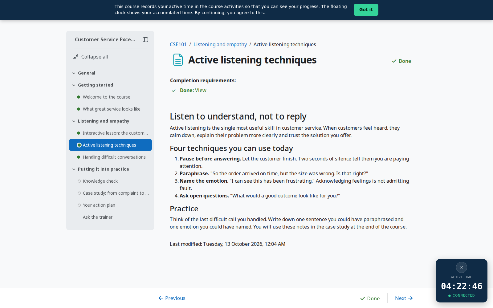
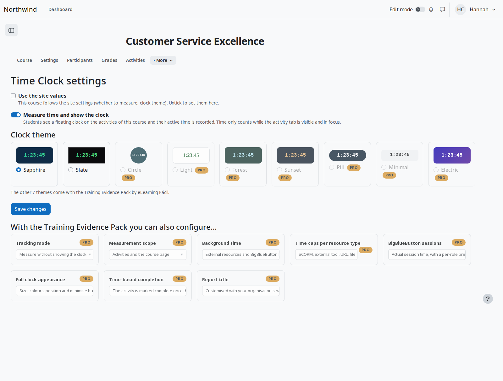

3How time is measured
The clock starts counting when the student opens an activity and only keeps counting while that tab is
visible and focused.
| Counts | Doesn’t count |
|---|
| The activity open and in front, including a video playing in it (on purpose). |
A background tab, a minimised window or the student in another application. |
| SCORM packages, including those that open in a new window. |
Clock jumps, for example when the computer sleeps: they are trimmed. |
The course students (capability local/eftimeclock:recordtime). |
Teachers, managers and site administrators: they see no clock and nothing is recorded for them, even
when they are also enrolled as students. |
Checked on the server
Each visit has its own identifier and saving never duplicates, even on unstable connections. On top of that,
the server only accepts the seconds that have really passed since that student’s previous save: a hand-made
call, a replayed request or two devices at once cannot inflate the total. When in doubt, it measures less.
The transparency notice
The first time the student opens an activity, a banner explains that their time is being measured and that
the clock shows their accumulated time. Once they click Got it it doesn’t appear again. It can be turned
off for the whole site.

The notice at the top, once per student. The clock is already counting at the bottom right.
6Course and site settings
In each course
In the course: More → Time Clock settings.

At the top, “Use the site values” and the measuring switch; below, the theme gallery:
Sapphire and Slate are chosen here, the rest come with the Training Evidence Pack.
| Setting | What it does |
|---|
| Use the site values | The course always follows the site (measure or not, and theme). Untick it to decide in this course. |
| Measure time and show the clock | Turns measuring on or off in this course. |
| Clock theme | Sapphire or Slate. |
For the whole site
In Site administration → Plugins → Local plugins → Time Clock:
| Setting | Default | What it does |
|---|
| Measure time by default | Yes | Whether courses measure time and show the clock. Each course can change it. |
| Default clock theme | Sapphire | The theme for courses without their own setting. |
| Show the measurement notice | Yes | The transparency notice each student sees once. |
7Permissions and data
| Capability | Granted by default to | What it allows |
|---|
local/eftimeclock:viewreport | Teacher, editing teacher, manager |
View and download the report. Also grant it to a read-only auditor role if you use one. Anyone who has it
is not measured. |
local/eftimeclock:manage | Editing teacher, manager |
Change the course settings. |
local/eftimeclock:recordtime | Student |
Have their time measured. |
- Course backup: the clock settings always travel; the measured time only when you tick “Include
enrolled users”. Restoring twice doesn’t duplicate.
- Resetting the course while unenrolling the students deletes their measured time, so a new edition
starts from zero. The settings are kept. Download the report first if you need it.
- Deleting the course deletes its measured time and settings with it; the confirmation page warns you
if there is time recorded.
- Privacy (GDPR): the plugin declares what it stores and lets you export and delete each person’s data
with the Moodle™ privacy tools.
8What it doesn’t do
It is a free, honest clock. So there are no surprises, this is what it does not do:
- It doesn’t measure the course main page: only activities.
- It doesn’t measure background time: videos or external resources open in another tab, or video
conferences.
- It doesn’t calculate the percentage of the course hours or give per-activity detail.
- It doesn’t produce PDF reports or filter by dates, groups or activities.
- It has no inactivity control and no time-based activity completion.
All of that is in the Training Evidence Pack (section 9). Free software (GPL v3), built to the Moodle™ plugin
guidelines: no external calls or third-party resources, automated tests and code review on every release.
9Moving to the Training Evidence Pack without losing data
The clock tells you how much time your students spend. eLearning Fácil’s Training Evidence Pack lets you
prove it in an audit: percentage of the reported hours, per-activity detail, background time (videos,
external resources and video conferences), time-based completion, the student progress block, designed PDF
reports and an evidence file for every course.
Starting free never costs you data
When the Training Evidence Pack (local_efreport) is installed on a site that uses this clock, it
imports all the time already
measured and Time Clock
steps aside automatically: it stops showing the clock and recording,
and its pages say so. That way there is a single clock and a single measurement.
More information at elearningfacil.com.
10Frequently asked questions
Can the student stop the clock?
They can minimise it, but measuring follows the same rules: it only counts while the activity is visible and
focused. Minimising changes nothing.
A teacher doesn’t see the clock
That is expected: anyone who can view the report, and site administrators, are not measured. To see what a
student sees, log in with a test student account.
Why doesn’t the clock appear on the course main page?
The free version measures activities only. Measuring the main page is part of the Training Evidence Pack.
I have the Training Evidence Pack installed and the free clock doesn’t appear
That is expected: with the suite present, this plugin steps aside so there is a single measurement.
Is the data good enough for an audit?
The record is honest and never duplicates, but an audit usually asks for more: percentage of the reported
hours, per-activity evidence, communications with the tutor… That is the Training Evidence Pack.
Time on a video in another tab doesn’t add up
On purpose: if the activity tab is not active, it doesn’t count. A video inside the activity itself, with the
tab in front, does count.